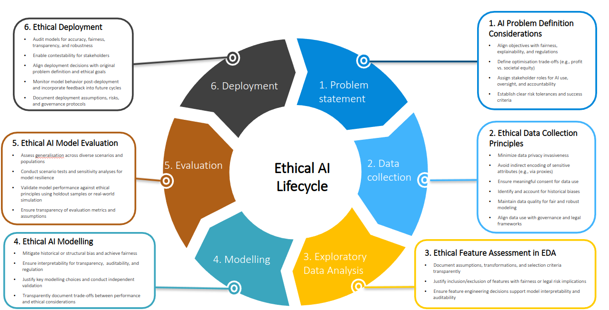

负责任人工智能导论
负责任人工智能:原则、治理与量化方法
学习目标
学完本章后,你应当能够:
- 说明为什么负责任人工智能对重大自动化决策(即会实质性影响一个人生活的决策,例如谁能获得贷款、工作或保险保单)整体上很重要,并特别针对保险、信贷、招聘和医疗等高风险领域加以阐述。
- 描述人工智能伦理的六项主要原则及其在专业实践中的意义。
- 概述从问题定义到部署的伦理人工智能生命周期。
- 识别不同司法辖区和行业中,与人工智能驱动型歧视相关的关键监管动态。
- 将本课程的三大支柱(公平性、可解释性与隐私)与更广泛的负责任人工智能框架联系起来。
保险贯穿本课程,作为反复出现的实例场景。这是一个人工智能监管与量化公平性/隐私方法都异常成熟的领域。但这些原则本身适用于任何重大自动化决策:招聘、信贷、医疗资源分配以及刑事司法风险评估都在其列。
为什么需要负责任人工智能?
机遇与挑战
负责任人工智能,是指以某种方式设计、部署和治理人工智能系统,使自动化决策不仅追求准确,还要做到公平、可解释并尊重隐私。机器学习和人工智能正在改变各行各业的决策方式:为保险风险定价的精算师、评估贷款的信贷员、筛选求职者的人力资源团队,以及为患者分诊的临床医生,都在与影响重大结果的自动化系统协同工作。
机遇:
- 更准确的风险评估与结果预测
- 对申请、理赔(保单持有人在遭受损失后提出的赔付请求)或案件的筛查与处理更快、更一致
- 新型数据来源(车载远程信息技术,即智能手机或车载传感器等追踪驾驶等行为的设备或应用程序,以及可穿戴设备、交易记录、数字足迹)使决策得以做到更精细
- 常规决策的自动化,使专业人员得以从事更高价值的工作
挑战:
- 自动化系统所做出的重大决策,影响着数以百万计的人获得机会、定价与准入
- 复杂性使决策过程变得难以理解,无论对受影响者、监管者,还是从业者本身皆然
- 数据反映的是历史模式,其中也包括过去的歧视
- 错误与偏差会随自动化规模而自动扩大
负责任人工智能并非要放慢创新的脚步——而是要让创新经得起审视与辩护。
失败并不总是显而易见
设想一家车险公司正在构建一个新的机器学习定价模型。团队为回应监管压力而移除了性别变量(例如在欧盟,自欧洲法院2011年 Test-Achats 判决 (European Court of Justice 2011年) 以来,性别已成为保险定价中的受保护属性)。模型从未将 gender(性别)作为输入变量。
但 vehicle engine size(车辆发动机排量)和 annual mileage(年行驶里程)仍然保留在模型中,而这两者在训练数据中都与性别存在相关性。因此,这些变量可能成为性别的代理变量,这意味着仅仅移除性别变量本身,并不足以消除模型输出结果中与性别相关的差异。
同样的结构在其他场景中反复出现。一个招聘模型移除了求职者性别、却保留了连续工作年限,便是一例。一个信贷模型移除了种族、却保留了邮编,则是另一例。
由此产生的问题:
- 这个模型是否公平?依据哪一种公平性定义?
- 该机构能否向监管者解释,为什么某个特定个体获得了某个特定结果?
- 用于训练模型的行为数据,其隐私将何去何从?
- 当模型产生有害结果时,谁应当承担责任?
这些正是本课程旨在回答的问题。公平性、可解释性与隐私将被逐一以量化方式展开,各自拥有一套自己的方法工具。问责制也会被论及,但主要通过文档记录与责任人指定等治理实践来实现,这部分内容将在第八章得到最充分的展开,而不是作为一个独立的量化方法模块。
人工智能伦理的主要原则
六项原则
人工智能伦理框架普遍认同六项适用于各行业与各监管背景的核心原则 (Huang 2025年)。
1. 公平性与非歧视 人工智能系统不应在受保护群体(即由受保护属性所界定的群体,受保护属性是指种族、性别或年龄等反歧视法禁止用于决策的特征)之间产生不合理的差异性结果。这既包括直接歧视(直接使用受保护属性),也包括间接歧视(使用代理变量,即那些表面中立、却复现了群体差异的变量)。
2. 透明度与可解释性 决策必须是可解释的,不仅要让开发者理解,也要让客户、监管者和受影响方能够理解。透明度体现在两个层面:系统是如何运作的,以及某一具体决策为何会被做出。
3. 问责制 当人工智能系统造成损害时,必须明确由谁负责:是开发者、部署机构、监管者,还是为模型签字认证的专业人员。问责制要求相应的文档记录与治理机制。
4. 隐私与数据伦理 人工智能系统消耗海量的个人数据。个人对其数据如何被收集、使用、共享和留存拥有相应权利。第三方数据来源、车载远程信息技术和行为数据,在预测效用与隐私保护之间制造了新的张力。
5. 可申诉性 受自动化决策影响的个人,必须拥有实质性的渠道去理解、质疑和申诉这些决策。这一原则正日益被纳入监管框架之中(例如欧盟 GDPR 第22条,即《通用数据保护条例》;以及澳大利亚《隐私法》的相关改革)。
6. 稳定性与稳健性 人工智能模型必须在真实世界条件下持续可靠地运作,包括应对数据漂移、对抗性输入和分布偏移。一个在部署时公平且准确的模型,两年后未必依然如此。
公平性、可解释性与隐私,是这六项原则中的三项,也是本课程以量化方式重点展开的三项。Reid Blackman 在其著作《Ethical Machines》(Blackman 2022年) 中,将同样这三项称为人工智能的“三大”伦理风险(“Big Three”)。本课程选择同样这三项作为聚焦范围,出于实际考量:公平性、可解释性与隐私各自都已拥有一套日臻成熟、定义精确的量化方法工具(即本课程所涵盖的公平性准则、可解释性技术与隐私方法),即便在这些工具中做出选择本身仍是一项因具体领域而异的判断。问责制、可申诉性与稳定性目前尚未拥有同等完善的工具体系。这三项原则依然重要,只是本课程将它们作为治理与监测实践来处理,而非作为独立的量化模块。
三大支柱,多方利益相关者
每一支柱都对应一个不同的核心问题,但三大支柱所涉及的利益相关者大体相似:受决策影响的个人、负责监管该领域的监管者,以及部署该系统的机构。
| 支柱 | 核心问题 |
|---|---|
| 公平性 | 模型是否公平地对待每一个人? |
| 可解释性 | 模型的决策能否被理解和证成? |
| 隐私 | 个人数据是否得到适当使用与保护? |
每一支柱都同时具有原则维度(我们应当做什么?)和量化维度(我们如何衡量、落实并加以验证?)。本课程对这两个维度都会加以论述。
从原则到实践
原则是必要的,但并不充分。精算、数据科学以及其他分析类专业,都面临着同一个转化难题:
我们该如何将“公平性”“可解释性”与“隐私”这些原则,转化为可衡量、可审计、可辩护的具体实践?
本课程聚焦于连接伦理原则与专业实践之间这一鸿沟的量化方法。
| 原则 | 本课程相应章节 |
|---|---|
| 公平性与非歧视 | 第二至三章:公平性准则、模型设计、审计规程 |
| 透明度与可解释性 | 第四至五章:PFI、PDP、SHAP、ALE、交互效应 |
| 隐私与数据伦理 | 第六至七章:k-匿名性、差分隐私、合成数据 |
| 问责制 | 第二、四、八章:治理、文档记录、权衡取舍 |
| 可申诉性 | 第二章:公平性测试与审计规程(可用于支持申诉的统计证据);第四章:解释权(要求对方就一项自动化决策给出理由的权利);第五章:反事实解释 |
| 稳定性与稳健性 | 第八章:整合与系统性风险 |
伦理人工智能生命周期
人工智能的失败并非始于部署阶段
人工智能失败的一个常见根源在于问题建构本身,而非模型本身,例如问错了问题、使用了错误的结果变量,或未能考虑到受影响的对象是谁。
“数据分析中最常见的失误,是把问题的类型搞错了。”
— Leek 和 Peng (2015年)
伦理风险存在于人工智能生命周期的每一个阶段,而不仅仅是模型部署的那一刻。
六阶段生命周期视角
Huang (2025年) 提出了一个框架,将伦理检查点嵌入到人工智能开发与部署流程的各个环节之中。

| 阶段 | 关键伦理问题 |
|---|---|
| 1. 问题定义 | 目标是否与公平性、透明度和监管标准相一致?优化过程是否在公司盈利与客户福祉之间取得平衡?谁拥有对人工智能使用、监督和风险的所有权? |
| 2. 数据收集 | 数据是否侵犯隐私?代理变量(如邮编或职业)是否间接编码了敏感属性?同意是否具有实质意义?数据是否反映了历史性偏见? |
| 3. 探索性数据分析 | 输入特征是否可能直接或通过与受保护群体的相关性而产生歧视性影响?每一个特征能否向监管者和客户(而不仅仅是内部团队)作出合理解释? |
| 4. 建模 | 模型是否在准确性与公平性、可解释性、透明度之间取得平衡?能否评估输出结果在不同社会群体间是否存在差异?其可解释程度是否足以支持审计? |
| 5. 评估 | 模型表现是否在相关子群体中同样成立,而不仅仅是在总体层面成立?结果能否在不同情境下泛化?权衡取舍是否已向决策者充分说明? |
| 6. 部署 | 模型上线后是否定期接受审计?客户能否申诉或质疑某一结果?是否存在反馈回路,将结果用于改进未来的迭代? |
领域内的专业人员(保险领域的精算师、信贷领域中在批准贷款或保单前评估和为风险定价的核保人员、招聘领域的人力资源分析师)正日益参与到这一生命周期的每一个环节,不仅限于模型开发与验证,也包括治理、风险评估和利益相关方沟通。负责任人工智能是一项专业责任,而不仅仅是一项技术责任。
为什么问题建构最为重要
前文引用的 Leek 和 Peng (2015年) 区分了数据分析可能提出的六种问题类型,并指出大多数分析失败,源于回答了错误类型的问题,而非把正确类型的问题回答得不好。
| 类型 | 提出的问题 | 示例 |
|---|---|---|
| 描述性 | 发生了什么? | 按保单类型划分,平均理赔金额是多少? |
| 探索性 | 数据中存在哪些模式? | 面试评分是否会按面试官的不同而呈现聚集性? |
| 推断性 | 我们能从样本对总体做出怎样的推断? | 该样本的平均贷款违约率能否代表全体借款人? |
| 预测性 | 未来可能发生什么? | 这名患者预期的住院天数是多少? |
| 因果性 | X 是否导致了 Y? | 提高免赔额(保单持有人在保险开始赔付前须自行承担的部分)是否会降低理赔频率? |
| 机制性 | 系统究竟是如何运作的? | 一种药物在生理上是如何降低血压的? |
把一种问题类型误认为另一种,是伦理失败的一个常见根源,而不仅仅是技术失败;但即便正确地识别出问题类型,本身也还不够。同一类型的问题,置于不同的业务情境之下,在其后每一个环节上都可能需要不同的选择。
一家咨询公司有两个团队,分别为两个不同的客户提供服务,各自被要求回答一个预测性问题。
团队A 为一家大型超市服务,预测产品需求,以便仓库据此安排各地的备货数量。预测过高会造成库存浪费,预测过低会造成销售损失。这一模型的输出结果不会导致任何具体客户被定价、被筛查或被拒绝任何东西。
团队B 为一家车险公司服务,为潜在的个人投保人预测理赔的数量和成本,以便据此设定其保费。
对这两个团队而言,应当由什么来决定模型类别、特征选择和评估标准的选择?为什么同一种预测性问题,会导向不同的选择?
对团队A而言,模型的输出结果不会导致任何具体个人被定价、被筛查或被拒绝任何东西,因此预测准确性是压倒性的考量因素。一个基于数百个工程化特征构建的复杂、高准确率模型,是恰当的选择。
对团队B而言,预测性问题的形式相同,但作用的对象是具体个人而非总体库存水平,而这一点会改变下游的一切。可解释性此时与准确性同等重要,因为模型必须能够向监管者以及被定价的客户作出解释。特征选择此时需要对代理变量加以审慎甄别,因为一个与理赔相关的特征,也可能与某个受保护属性相关。公平性指标也因此成为评估的一部分,而不仅仅是预测误差。
监管背景
快速演变的格局
在包括保险、信贷、就业等在内的各类高风险领域中,针对人工智能重大决策的监管,正在各大主要市场迅速演变。目前出现了三类监管干预:
- 禁止变量规则:特定属性(性别、种族、族裔)不得作为定价因子使用
- 代理性歧视规则:模型不得使用表面中立、实为禁止属性代理变量的变量
- 算法影响与透明度义务:部署机构必须记录、解释并证明其符合公平性标准
美国:分行业监管
在联邦层面尚无人工智能立法的情况下,美国各州及各行业监管机构已在监管创新方面走在前列,同样的三类监管干预在保险、招聘与信贷领域反复出现:
Colorado SB21-169(2021) (Colorado General Assembly 2021年) 美国第一部明确针对保险领域算法歧视的法律。禁止保险公司以对种族、肤色、民族或族裔出身、宗教、性别、性取向、残疾、性别认同或性别表达构成不公平歧视的方式使用外部消费者数据。
NYC Local Law 144(2021) (New York City Council 2021年) 要求使用自动化就业决策工具(用于筛选或排序求职者的人工智能系统)的雇主,每年委托独立机构开展偏见审计并公布结果,同时告知求职者正在使用此类工具。
New York DFS Circular Letter No. 7(2024) (New York State Department of Financial Services 2024年) 由纽约金融服务部(DFS,该州的保险与金融监管机构)发布。要求在承保与定价中使用人工智能系统及外部消费者数据的保险公司,持续开展偏见测试,建立治理框架,并能够向消费者和监管者解释模型输出结果。
CFPB 与 ECOA(2023) (Consumer Financial Protection Bureau 2023年) 美国消费者金融保护局(CFPB)已确认,《平等信贷机会法》(ECOA)中关于不利行动通知的要求(即向被拒绝的申请人告知拒绝理由的法定义务)同样适用于人工智能驱动的信贷决策,无论模型复杂程度如何。
NAIC Model Bulletin(2023)(National Association of Insurance Commissioners 2023年) 由全国保险监理官协会发布,为美国各州保险监管机构提供人工智能治理、风险管理与第三方模型监督方面的指引。伊利诺伊州的《人工智能视频面试法》(Illinois General Assembly 2019年) 则专门规制基于人工智能的招聘评估。保险与招聘领域的监管步伐目前最快,但分行业监管正逐步扩展至信贷、医疗等更多领域。
欧盟:横向人工智能监管
EU AI Act(2024) (European Parliament and Council of the European Union 2024年) 采取跨行业适用的风险分级方法。其附件三(Annex III)将若干类别列为高风险人工智能系统,包括保险承保与定价、就业与员工管理、信用评估、教育、执法以及基本公共服务的获取。所有此类系统均须遵守以下要求:
- 部署前进行合格评定(对系统是否符合法定要求的正式审查)
- 强制性风险管理体系
- 数据治理要求
- 透明度与文档记录义务
- 人工监督要求
- 上市后持续监测
保险只是附件三所列若干类别中的一种。该法案将其与就业和信贷决策同等对待,视为结构上相似的类别,而非特殊情形。EU AI Act 的适用与 GDPR 关于自动化决策的既有要求(第22条)并行不悖、相互补充。
澳大利亚:原则导向、多监管机构并行
澳大利亚没有一部独立的人工智能法。相反,现有的行业法律被用于规制人工智能,由多个监管机构并行执法。没有出台新的人工智能立法,并不意味着没有问责。这与欧盟单一监管机构、独立立法的路径形成对比。澳大利亚证券与投资委员会(ASIC)作为其中一个监管机构,其相关案例展示了治理失灵会带来怎样的后果。
某持牌机构部署了一个用于预测消费信贷违约风险的人工智能模型,却没有任何人工智能战略、政策,也未对其人工智能应用场景进行风险评级。一项在部署十个月后开展的内部审查发现,该模型建立在对所依赖第三方平台“理解有限”的基础之上,“模型文档不完整、缺失关键要素”,并且存在“治理薄弱、缺乏监测流程”的问题。报告将其描述为一个“黑箱,既无法解释评分卡中的变量,也无法解释这些变量对申请人评分所产生的影响”。该机构在此之后又继续使用该模型达数月之久,并且还报告了扩大人工智能使用范围的计划。
来源:ASIC Report 798,Beware the Gap(2024年10月),第7页 (Australian Securities and Investments Commission 2024年)。
ASIC (Australian Securities and Investments Commission 2024年) 发布了11个问题,要求持牌机构就其使用的任何人工智能系统作出回答。REP 798 发现,在接受审查的23家机构中,只有12家制定了公平性政策,且半数机构尚未针对人工智能更新其风险框架。
APRA(澳大利亚审慎监管局)的 CPS 230 Australian Prudential Regulation Authority (2023年)要求建立经董事会批准的操作风险框架。APRA 2025—26 年度监管计划明确表示,预期人工智能风险须在该框架中得到明确处理。
OAIC(澳大利亚信息专员办公室)与《隐私法》自动化决策改革:自2026年12月起,隐私政策必须披露对个人权利或利益构成重大影响的自动化决策是如何作出的。
FAR Australian Prudential Regulation Authority and Australian Securities and Investments Commission (2023年)施加了一项“合理步骤”义务。责任人须对其所监督的领域负责,包括在该领域内运行的人工智能系统,若明知存在违规行为而参与其中,个人可面临最高156万澳元的民事罚款。
相关义务不会因外包给供应商而转移。如果第三方模型产生不公平的结果或违反了牌照条件,监管机构追究的对象是部署机构本身。问题的关键在于该机构是否对供应商进行了充分治理,而不在于模型是由谁开发的 (中国银行保险报 2026年)。
澳大利亚:未来动向
| 时间 | 进展 |
|---|---|
| 2025年10月 | 发布 AI6 指引 (National AI Centre 2025年),国家人工智能中心自愿性框架(参见第八章) |
| 2025年12月 | 国家人工智能计划 (Department of Industry, Science and Resources (Australia) 2025年):强制性护栏措施被搁置,现有法律暂时承担相应职能 |
| 2026年初 | 人工智能安全研究院成立,这是一个耗资2,990万澳元的监督机构,负责评估风险并为监管机构提供建议 |
| 2026年12月 | 《隐私法》自动化决策披露义务正式强制生效 |
AHRC:《人权与技术》(2021)(Australian Human Rights Commission 2021年) 与《人工智能与保险歧视》(2022)(Australian Human Rights Commission and Actuaries Institute 2022年) 澳大利亚人权委员会2021年具有里程碑意义的报告,提出了跨行业适用的人工智能与人权原则。其2022年与精算师协会联合制定的保险行业专项指引,将这些原则应用于承保与定价场景,并援引了《年龄歧视法》《残疾歧视法》《种族歧视法》与《性别歧视法》。
中国:约束性、分行业规则
中国目前尚无一部生效的综合性人工智能法,尽管国务院2026年立法工作计划提出要“加快推进综合立法”,且一份草案已自2025年末起流传,但其正式颁布的时间表仍不明朗。与此同时,针对具体行业和主题的规则已覆盖了大部分重大人工智能应用场景,其中一项专门文件现已直接针对保险行业。
《银行业保险业人工智能应用监管指引》(2026) (国家金融监督管理总局 2026年) 中国国家金融监督管理总局针对银行与保险机构发布了分行业人工智能指引(金发〔2026〕8号,2026年6月18日)。该指引涉及风险分类与高风险应用审批、对高风险应用的人工监督、透明度与可解释性、避免算法歧视等公平性问题、数据与网络安全保护,以及对外部引入的生成式人工智能模型的程序性要求。与下文所列一般性规则不同,该指引直接适用于保险机构。
《互联网信息服务算法推荐管理规定》(2022) (国家互联网信息办公室 2022年) 由国家互联网信息办公室(网信办,CAC)发布。备案与安全评估义务专门适用于具有舆论属性或社会动员能力的算法服务,而非适用于所有算法应用。在其适用范围内,该规定还禁止“大数据杀熟”,即利用消费者自身的数据,对其收取比其他消费者购买同一产品更高的价格。
《个人信息保护法》第24条(2021) (全国人民代表大会 2021年) 中国相当于 GDPR 的自动化决策条款,要求自动化决策保持透明、结果公平,并禁止因自动化决策而在“交易价格等交易条件上”对个人实行“不合理的差别待遇”。这是一项针对性规则,专门规制在不具正当理由的情况下,对本无实质差异的客户实施算法差别定价,而并非对所有价格差异化行为的全面禁止。该条款还赋予个人解释权,以及在自动化决策对其权益有重大影响时拒绝仅通过自动化方式作出决策的权利。
《生成式人工智能服务管理暂行办法》(2023) (国家互联网信息办公室 2023年) 及内容标识规则(2025) (国家互联网信息办公室、工业和信息化部、公安部、国家广播电视总局 2025年) 要求在提供生成式人工智能服务前完成安全评估与登记,并规定须对人工智能生成内容进行显式与隐式标识。
《银行保险机构消费者权益保护管理办法》第27条 (中国银行保险监督管理委员会 2022年) 相较于 PIPL 第24条,提供了一个与保险行业联系更为直接的对照。该条要求对交易条件或风险状况相当的消费者,在相同产品和服务上实行合理定价,禁止不公平定价。
新加坡:自愿性、原则导向框架
新加坡尚无具有约束力的人工智能专项立法,而是有意选择了一条支持创新、“沙盒式”(即在放松管制的条件下测试新方法的受控环境)的路径,以自愿性框架与测试工具为依托,而非强制性义务:
Model AI Governance Framework(IMDA/PDPC,2019年发布,2020年更新) (Personal Data Protection Commission Singapore and Infocomm Media Development Authority 2020年) 由新加坡资讯通信媒体发展局(IMDA)与个人数据保护委员会(PDPC)发布,面向私营部门的一般性自愿指引。随着新的人工智能范式不断涌现,该框架后续又扩展出生成式人工智能治理框架(2024) (AI Verify Foundation and Infocomm Media Development Authority 2024年) 与代理型人工智能治理框架(2026)。
AI Verify (AI Verify Foundation 2023年) 一款开源人工智能治理测试工具包,现由 AI Verify 基金会负责运营,该基金会协调着一个致力于构建全球共享人工智能测试标准的社区。
MAS FEAT Principles(2018) (Monetary Authority of Singapore 2018年) 与 Veritas Initiative (Monetary Authority of Singapore 2019年) 新加坡金融管理局(MAS)与金融业共同制定的 FEAT 原则,专门适用于金融服务业(包括保险业)中的人工智能与数据分析。FEAT 代表负责任人工智能使用的四个维度:公平性(Fairness,人工智能系统不应产生歧视性结果,公平性考量应贯穿模型全生命周期,而非仅在结束时做一次核查)、伦理性(Ethics,人工智能的使用应符合机构自身的伦理价值观与更广泛的社会期待,对于具有重大影响的决策应保留人工监督)、问责性(Accountability,人工智能产生的结果必须有明确的责任归属,包括董事会与高级管理层层面)以及透明度(Transparency,机构须对其人工智能系统进行内部文档记录,并在适当情形下,向受影响的客户就人工智能驱动的决策给出有意义的解释)。
Veritas Initiative 由 MAS 与金融业共同开发,历经2020年至2023年间的多个阶段,将上述四项原则转化为金融机构可直接应用于自身模型的具体评估方法。其应用场景包括银行业的信贷风险评分与客户营销,以及保险业的预测性核保与欺诈检测,并配有一套可自动执行公平性指标评估的开源工具包。MAS 已于2025年11月就面向金融机构的具有约束力的《人工智能风险管理指引》发布咨询文件 (Monetary Authority of Singapore 2025年)。
FEAT 与 Veritas 是第二章所述公平性准则在金融行业的对应产物,二者由一个监管机构针对同一底层问题独立开发而成。Veritas 的评估方法并不设定单一的公平性检验标准,而是要求金融机构自行说明,应当如何在其人工智能驱动的定价或承保系统中界定、衡量、论证并监测公平性。
跨司法辖区的共同主题
尽管各司法辖区的路径存在差异(欧盟采取单一的独立立法,美国和中国采取具有约束力的分行业规则,澳大利亚和新加坡则在现有法律之上叠加自愿性框架),但三大主题始终一致地反复出现:
- 治理与问责:人工智能系统必须有明确的所有权归属、文档记录与监督机制。
- 公平性测试与偏见评估:部署机构必须能够证明其人工智能输出结果不存在不公平歧视。
- 可解释性与透明度:受影响的个人和监管者必须能够理解人工智能驱动型决策是如何作出的。
- 隐私与数据保护:此类系统所使用的个人数据,必须依法收集、使用和留存。
后三项主题,直接对应本课程的三大支柱:公平性、可解释性与隐私。治理与问责则是一个贯穿性主题,本课程将其融入每一支柱各自的量化方法之中(如第二章的审计规程、贯穿全程的文档记录实践)加以处理,而非作为独立的第四支柱单列。至于某一司法辖区是通过单一立法、多个行业监管机构,还是自愿性行业框架来落实这些主题,属于监管策略层面的问题。但其背后的实质性义务是趋同的。
课程路线图
结构:原则与实践
每一主题都由两章构成,一章聚焦于适用于各领域的原则与概念框架,另一章则聚焦于在真实案例研究中展开的量化方法。
| 章节 | 标题 | 关键方法 |
|---|---|---|
| 2 | 公平性原则 | 公平性准则与模型设计(核心内容);福利分析与审计框架(简要概览) |
| 3 | 公平性实践 | 公平性准则的度量与落实,案例研究:法国车险数据(R) |
| 4 | 可解释性原则 | PFI、PDP、ALE、SHAP、LIME、监管期望 |
| 5 | 可解释性实践 | 全局与局部模型解释,案例研究:XGBoost 保险定价模型(Python) |
| 6 | 隐私原则 | k-匿名性、差分隐私、合成数据、监管框架 |
| 7 | 隐私实践 | 重新识别风险、k-匿名性、差分隐私、合成数据,案例研究:保险微观数据(R) |
| 8 | 权衡取舍、整合与治理 | 公平性—准确性—隐私权衡取舍、系统性风险、治理 |
三个值得牢记的案例
以下三个被广泛记载的失败案例,预示了本课程接下来的三大支柱。每一个案例都对应着后续某一章节对的预告。请将它们牢记在心,作为本课程所讲授工具存在意义的一种提醒。
2016年,ProPublica 的调查报道 Machine Bias 对美国法院所使用的再犯风险评估工具 COMPAS 进行了审视 (Angwin 等 2016年)。在两年内未再犯的被告人中,黑人被告被标记为“高风险”的比例,几乎是白人被告的两倍。该工具的供应商则反驳称,COMPAS 具有良好的校准性:在获得相同风险评分的被告人中,不同种族之间的再犯率相近。
双方各执一词,而这恰恰正是问题所在。一个工具完全可能满足校准性(充分性),却仍在错误率上表现出显著差异(违反分离性)。第二至三章将为你提供精确描述这一权衡取舍的词汇工具,以及据此判断你所处情境应当采用哪一种准则的模型设计方法。
当2020年新冠疫情导致英国学校考试取消时,监管机构 Ofqual 使用了一种标准化算法,将教师预测的成绩转换为最终成绩,以期防止成绩虚高 (Centre for Multilevel Modelling, University of Bristol 2020年)。该算法下调了约40%的教师预测成绩,并在很大程度上依赖各学校的历史成绩记录,导致历史表现较差(其中公立学校占比过高)学校的学生,比历史表现优异、规模较小(其中私立学校占比过高)学校的学生受到更大幅度的下调。
在成绩公布之前,无论是学生、学校,还是政府,都无法就“这名学生为什么得到了这个成绩?”这一问题得到令人满意的答复。公众的强烈反弹——包括首相将其称为一个“变异算法”——迫使当局在数日之内改回采用教师预测成绩。第四至五章所涵盖的可解释性工具(PDP、SHAP)本可以在部署之前,精确量化学校历史记录究竟在多大程度上改变了每名学生的计算成绩,尽管这些工具本身无法解决一个更根本的问题,即学校历史记录究竟是否应当决定某个学生个人的成绩。而这个问题,属于第二至三章所讨论的公平性视角。
2018年,有消息披露,政治咨询公司剑桥分析(Cambridge Analytica)在打着学术研究幌子的第三方性格测试应用的掩护下,获取了约8,700万 Facebook 用户的数据,随后在未经这些用户知情或同意的情况下,将这些数据挪作政治广告的精准投放之用。美国联邦贸易委员会(FTC)以 Facebook 违反此前作出的、在与第三方共享用户数据时须明确告知用户的承诺为由,对其处以50亿美元罚款 (Federal Trade Commission 2019年)。
其核心问题,并非技术意义上的数据泄露,而是数据被以某一目的收集之后,又被挪作另一项不相关目的之用。第六至七章正是围绕这一边界(场景一致性、目的限制)展开,并介绍能够使这种“悄悄挪用”变得更难以实施的隐私增强技术。
一门量化课程
本课程并非一门将人工智能伦理作为哲学学科来讲授的课程,而是一门关于量化工具的课程,这些工具能够使伦理承诺变得可衡量、可落实。
学完本课程后,你应当能够:
- 拟合并比较具有公平性意识的模型,并量化公平性与准确性之间的权衡取舍
- 运用最前沿的解释工具,解读复杂的机器学习模型
- 评估并降低表格型数据集中的重新识别风险
- 生成并评估用于隐私保护分析的合成数据
- 向包括监管者在内的非技术利益相关方,清晰传达技术性结果
原则性章节所举的例子,同样取材于保险、信贷、招聘、医疗和刑事司法等多个应用领域。而实践性章节则将由此得出的方法应用于真实的保险数据集,作为一以贯之的案例研究,并使用行业相关的工具(R、Python、XGBoost、SHAP、sdcMicro、synthpop)。同样的方法也可以调整适配招聘、信贷或医疗数据集,尽管其相应的结果变量、公平性考量因素与法律背景会有所不同。
三大支柱的相互关联
本课程的三大支柱并非彼此独立。它们以重要的方式相互作用,这一点将贯穿全课程加以探讨。
一家保险公司引入了基于车载远程信息技术的定价方案,利用智能手机应用采集的GPS与加速度传感器数据。由车载远程信息数据得出的定价因子,可能包括行驶距离、行驶时段、超速、急加速与急刹车。
- 公平性:这些由车载远程信息数据得出的因子,是否成为年龄、性别或社会经济地位等受保护属性的代理变量?
- 可解释性:保险公司能否向保单持有人解释,是哪些由车载远程信息数据得出的因子,导致了其保费或续保保费的上涨?
- 隐私:保险公司是否拥有收集持续位置数据的合法依据?是否与第三方共享数据?保单持有人能否要求删除数据?
每一支柱都各自产生独特的义务,但一套完整的负责任人工智能框架必须同时兼顾这三者。同样的三方张力,也出现在职场生产力监控软件之中(绩效评分中的公平性、自动标记的可解释性、持续记录活动的隐私性),以及被用于保险或雇主健康促进计划的可穿戴健康设备之中。
推荐阅读
- Huang (2025年): 本章通篇所使用的伦理人工智能生命周期框架
- Leek 和 Peng (2015年); Peng 和 Matsui (2015年): 问题类型框架,以及一个界定良好的数据科学问题应具备的特征
- Barocas 和 Selbst (2016年): 关于算法性差异性影响的基础性法律与技术论述,适用于任何自动化决策
第二至七章各自都提供了针对公平性、可解释性与隐私的专项推荐阅读。